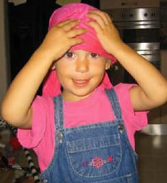

|

Your baby begins weaning from breastfeeding when solid foods are introduced. As your baby eats more solid foods he will nurse less often. Common ages for baby-led weaning (when a child is allowed to wean himself) are 12-14 months, 18 months, 2 years, and 3 years. Most mothers in North America wean their babies before 9 months. Weaning from breastfeeding - Starting on solid foods Make your own home made baby food. Baby food cook book sale Studies show that nursing a toddler actually helps him become more independent and self-reliant. It is a MYTH that nursing a toddler makes them more dependent on their mother. The FACT is that satisfying emotional needs by nursing shows your child that his needs are important and met leading to higher self esteem and confidence. Weaning From Breastfeeding Happens When…Your baby’s frequent crying may cause you to doubt your ability to satisfy your baby’s hunger with exclusive breastfeeding. You may feel frustrated and exhausted by your baby biting, teething, or lack of sleep due to frequent nursing. It may appear that weaning from breastfeeding will make life simpler. External pressure from friends and family to wean may take the “choice” to not wean away. You may be ready to have another child and you fear that breastfeeding will suppress your fertility. Getting pregnant while breastfeeding A sudden maternal illness or need for maternal treatment may bring about weaning from breastfeeding before you are ready. Express milk to relieve discomfort. Eliminate the remaining feeds, making sure that your baby gets extra cuddles and attention. You will probably have engorgement for 24 hours that will gradually subside. Use ice wrapped in towels to lower pain. Wrap your breasts in cabbage leaves to lower swelling. Take acetaminophen to relieve pain and swelling. Baby-Led WeaningWeaning when your baby shows readiness is the most natural and preferred method of stopping breastfeeding. Your baby slowly drops a feeding here and there over a period of weeks or months and nurses only when he shows the need or desire to breastfeed. Sometimes babies show a desire to wean before the mother is ready. This is a time of discovery and learning to appreciate a baby’s maturity and new achievements. Moms with babies who stop breastfeeding before she is ready learn new ways to interact and comfort their precious babies. Mother-Led WeaningThis occurs when a mother weans, for any reason, without any signs from the baby that it is time to wean. If a mother has come to resent the breastfeeding relationship it may be a good time to wean. When you have decided to wean your baby from breastfeeding, gradual weaning is best for both you and your baby. Gradual weaning will sidestep feelings of rejection for your baby and will prevent you from going through the unnecessary pain of engorgement or blocked milk ducts which can lead to breast infections. Babies younger than 9-12 months of age will need to be weaned to a bottle due to strong sucking needs. Weaning from Breastfeeding GraduallyStart by dropping the least preferred feed and allow a 3-day adjustment period for your baby and your milk supply. Substitute the dropped feed with cuddles, drinks, snacks or a favorite activity. After a few days when you and your baby have adjusted to your substitutions for the missed breastfeeding session, drop another feeding. Continue this plan for several weeks or months until you and your baby feel comfortable with your level of weaning. During the weaning process it is important to provide extra loving and cuddling for your baby. It may be especially difficult for your baby to get used to not nursing at bedtime and nap times. A baby being weaned too quickly may become more demanding of your attention, more insistent on feeding or show physical upset such as allergic reactions, stomach upsets, or constipation. Concerns About Mom When Weaning From BreastfeedingIf your breasts become full and uncomfortable it may help to express a bit of milk for relief but take care not to express too much or it could lead to increased milk production. Watch for symptoms of blocked ducts or mastitis and wear a comfortable bra that is not binding. Use cabbage leaves, ice packs, or a pain reliever.
| ![XML RSS]()


![Add to My MSN]()
![Subscribe with Bloglines]()